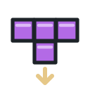

All categories
Every list on the wiki.
- Enemies16 pages
 Bosses14 pages
Bosses14 pages Items223 pages
Items223 pages Equipment86 pages
Equipment86 pages Locations14 pages
Locations14 pages- Quests102 pages
- Quest lines20 pages
- NPCs9 pages
- Shops and stations28 pages
- Skills and atlases87 pages
- Feats and badges45 pages
- Omens, champions and diaries76 pages
- The Forge50 pages

Activities10 pages- Lists8 pages
- Guides21 pages